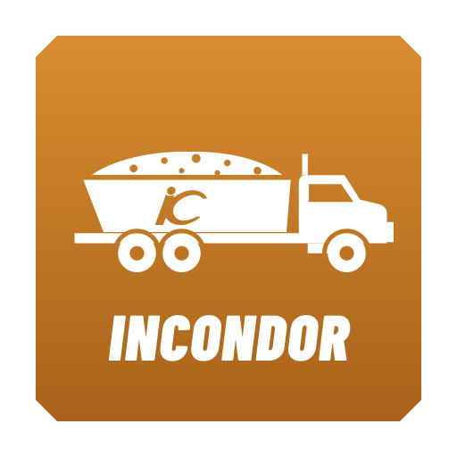
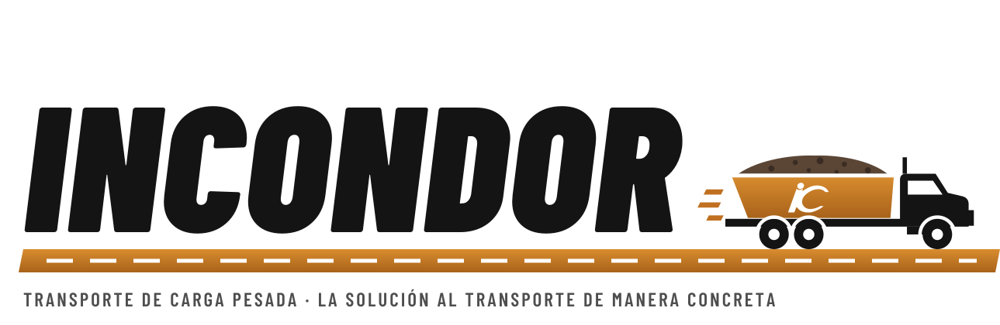

Incondor S.A.S · propuesta v3
Una volqueta
cargada
Incondor transporta material de cantera, mezcla asfáltica, agua y maquinaria en volquetas doble troque. Por eso la volqueta cargada es el centro del logo. Se mantienen el cobre, el negro y el IC de la marca, que va pintado en el volco como en la flota real.
A · Volqueta IC
La volqueta con el IC en el volco y el nombre al lado.
Horizontal · documentos, firma de correo

Vertical · redes sociales, portadas
B · Placa de flota
La volqueta en blanco sobre una placa cobre. Sirve como foto de perfil, ícono de la app y adhesivo para las puertas.

Ícono · WhatsApp e Instagram

Horizontal
C · Ruta
El nombre en grande y la volqueta rodando sobre una vía cobre. Es la versión más llamativa para encabezados y vallas.

Fondo claro

Fondo oscuro